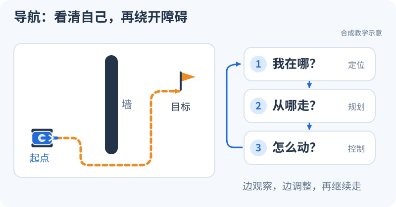

导航从这里开始：先让小车动起来
整理与维护：24cst朱鑫鹏
第一次来，不用先背缩写，也不用马上装 ROS。今天先做一件事：让屏幕里的小车绕过墙，走到目标点。

先看小车怎样到达目标
点「开始」，盯着车和旁边亮起的步骤看一遍。再点「重播」：这次找找，哪一步在回答“我在哪”，哪一步在回答“从哪走”。
单独打开演示，手机上可以全屏看。这是教学小场景，后面再把每一步接回本队代码。
想集中体验所有主题，可以打开全部互动演示。各章节里只展示当节内容。
第一次来，按这三步玩
- 先看消息怎么传。 去 ROS2 入门，把两端 Topic 名字改成不同，再改回来。
- 再看小车怎么转。 在同一课把车头转 90°，观察“向前”在屏幕上朝哪走。
- 最后帮它绕墙。 去路径规划，点「单步」看搜索一格格展开，再换成没有路的地图。
先能用自己的话解释屏幕变化，就完成了第一步。后面再按环境课装工具、跑自己的节点；完整的16 周安排留作进度表，不要求今天读完。
课程说明与代码版本
这是一条面向零导航经验大一新人的学习路线。目标是看懂本队系统、修改代码、用证据排障，并通过值守实车考核后参与比赛调试。学习对象已由队内确认是 Navigation-2027，不包含自瞄算法；自瞄侧提供的串口和机器人状态属于必须掌握的系统接口。
审查日期：2026-09-14。代码基线：Navigation-2027@183a410。 本轮完成源码、配置和文档静态审查，未在 Ubuntu/ROS 或机器人上运行导航。仓库中的默认值不等于已验证实车配置；使用时先填写版本与资源登记。
先用一次“去目标点”的任务理解导航
想象哨兵当前在场地左侧，你在 RViz 点了右侧一个目标。机器人不能只把“向右走”发给底盘：它先要知道自己在哪，知道两点之间有没有墙，再决定走哪条路，并在每次位置更新后调整速度。新人要学的内容，就围绕这几个问题展开。
雷达/IMU → 估计当前位置 → 将当前位置放进已有地图
↓
目标点 + 障碍物地图 → 规划路径 → 根据当前位姿算速度 → 坐标转换与底盘接口
↑
运行中的传感器和定位反馈
“定位”回答我在哪，“规划”回答从哪走，“控制”回答这一刻怎样走。地图里路径画出来了，只说明规划给了一个答案；底盘是否接到速度、速度所用坐标系是否正确、停止指令是否落实，还要沿后半条链检查。反过来，机器人有速度却不动，也不必立刻怀疑规划算法：输入名字、时间、控制权都可能让执行链断开。
第一次读代码，只抓住输入、处理、输出三件事。比如教学计数节点收到 7 后输出 7，你能手算结果；真实 loam_interface 在初始化阶段由里程计回调查询 TF、建立转换，点云回调使用缓存的变换。你就再加问一句“这些点原来在哪个坐标系，现在要转到哪里”。每学一个专题，都是在这张小地图上增加一种必须解释的约束。
| 先带着什么问题读 | 仓库内路径与代码入口 | 读完先说清什么 |
|---|---|---|
| 一个回调怎么把输入交给输出？ | 知识库 training/ros2_ws/src/nav_training/nav_training/sequence.py：计数源与接收端 |
定时发布与收到消息后执行回调的区别 |
| 速度怎么变成位置？ | 知识库 training/ros2_ws/src/nav_training/nav_training/core.py：integrate_body |
单位、朝向、时间间隔，以及一个手算终点 |
| 为什么真实点云要经过接口节点？ | Navigation-2027 ros_ws/src/pb2025_sentry_nav/loam_interface/src/loam_interface.cpp：真实输入与转换 |
Topic 名字、点云 frame 和 TF 查询的关系 |
| 当前系统到底选了哪个算法？ | Navigation-2027 ros_ws/src/pb2025_sentry_nav/pb2025_nav_bringup/config/reality/nav2_params.yaml：实际参数文件 |
配置选择插件，运行参数再决定实际生效值 |
学习时可以把每次疑问记成一句具体的话：“输入点云存在，但转换后没有点云”；它比“导航坏了”更容易导向下一条观察命令。各专题页会先解释这一步的原理，再给小例子、源码入口和检查方法。
按当前条件开始
- 阅读最终培训路线与原稿审查结论，确定当前阶段。
- 按环境与工程基础完成 S0。没有机器人也能开始；不要一开始尝试运行整个实车工程。
- 对照系统、Topic 和 TF 地图阅读少量真实代码；看不懂的概念回到对应专题。
- 按实践任务与考核交付代码、日志、对照结果和恢复记录。完成一次作业不等于取得实车操作资格。
- 用16 周任务单确定每周具体阅读与交付；读源码困难时做带参考解答的练习。当期任务完成后，从自学与进阶导航选择一个方向深入。
- 需要可运行基线时使用教学工作区和标准合成数据包，按两个完整 Debug 案例练习复现、诊断、修复与回归。
- 看不懂调试命令时，先读零基础 Debug 代码详解，再使用按现象检索的排查手册。两版配套，区分本队源码基线与旧实机案例。
学习目录
学完一个节点，下一步是把它放进一个有目标、有结果的小任务。现在增加三份配套练习：第 6 周用轻量巡逻串起通信与运动；第 9 周用A* 两步练习从补全框架走到独立实现；TF、地图与定位基础配可重复对照实验。先预测结果，再运行固定输入，最后解释差异。离线参考能帮助检查数学和状态逻辑，真实 ROS 通信仍要单独交证据。
| 入口 | 解决什么问题 | 主要阶段 |
|---|---|---|
| 培训路线 | 顺序、必学/了解/进阶、能力门槛 | 全程 |
| 16 周具体任务单 | 每周指定阅读、实际操作、交付、加餐和缺资源替代任务 | 全程 |
| 环境与工程基础 | Ubuntu/Humble、Git、C++/Python、构建缺口 | S0 |
| 配套教学工作区 | 可运行节点、理想运动、TF、Action 与六项改动练习 | S0–S2 |
| 标准合成数据包 | 解析轨迹、四组 rosbag2、地图、SHA256 与重算 | T2，T3 前置练习 |
| 轻量巡逻综合任务 | 目标、反馈、日志、障碍等待、取消与断流怎样组成一个任务 | S2 巩固，S5 回看 |
| A* 两步练习 | 先补启发式/搜索/回溯，再独立实现；用相同固定输入验收 | S4 / T5 |
| TF、地图与滤波对照实验 | 外参偏转、地图原点偏移、含噪估速的前后对照图与复算 | S2–S4 |
| Topic 故障案例 / 速度缓存案例 | 固定输入、完整证据、根因与修复前后回归 | S1、S5–S7 |
| ROS2、TF、时间与全向运动 | Node/Action/QoS、真实 TF、bag、速度坐标系 | S1–S2 |
| 系统地图 | launch→节点→Topic→TF→输出 | 初读 S0，S3 后复读 |
| 传感器、LIO、建图与重定位 | MID-360、Point-LIO、small_gicp、地图资产 | S3 |
| 环境表达与路径规划 | 地形 intensity、Costmap、A*、Hybrid-A* | S4 |
| Nav2、控制与接口 | 实际插件、BT、速度链、串口与控制权 | S5 |
| 源码审查证据 | 当前配置差异与需要复测的风险 | S5–S7 |
| Debug、实车与比赛 | 故障分层、停止、恢复、比赛交接 | 每阶段练习，S6–S7 实车 |
| Debug 命令详解 / 排查手册 | 从逐行命令与字段理解到故障排查，包含重复实例与历史实机案例 | S0–S2 入门，S6–S7 复查 |
| 实践任务与考核 | 作业输入、验收方法、量化门槛 | 全程 |
| 源码导读与参考解答 | 节点接口、速度缓存、地图路径、参数加载、时间差分五道题 | S1–S5 |
| 自学与进阶材料 | 基础补课、数学定位、规划控制、ROS2 系统，指定章节与离线项目 | 随阶段选学 |
| 仿真环境建设 | 已有代码、缺失资产、统一环境验收 | 可选基础设施 |
| 资料、模板与维护 | 阅读资源、数据集、问题记录、知识库更新 | 全程 |
目前可做与需要队伍提供的材料
| 条件 | 可以完成 | 不能据此声称完成 |
|---|---|---|
| 普通 Python 3.10+ + 配套 teaching kit | 理想运动、合成数据重算、两个故障模型 | 已验证 DDS、真实雷达或导航闭环 |
| Ubuntu 22.04 + ROS2 Humble 开发机 | S0–S2、栅格规划、源码追踪、教学节点故障注入 | 实车已能导航 |
| 增加已登记的 bag、消息定义和外参 | 数据体检、定位重跑、Costmap 输入观察 | 控制闭环、动态避障效果、可靠停车 |
| 增加已验收的仿真场景 | 闭环跟踪、目标取消、障碍与恢复实验 | 实车打滑、机械极限、传感器实测表现 |
| 增加负责人值守的机器人时段 | S6 实车资格与 S7 比赛演练 | 未覆盖场景的性能保证 |
本库已提供统一的合成教学 bag 与配套代码，用于运动、时间、TF 和接口练习；仍缺 MID-360/IMU 实测训练 bag、完整实车地图包和可复现实车环境。负责人应按材料清单补齐。教学代码的验证范围见运行记录；缺实测资产造成的等待不能记为新人不合格。
已有的Linux 教学、Linux 练习、SSH和Git 教学继续复用。开源项目合集用于专题拓展，其中 FAST-LIO、MINCO、MPC 等方案不自动成为本队必修栈。